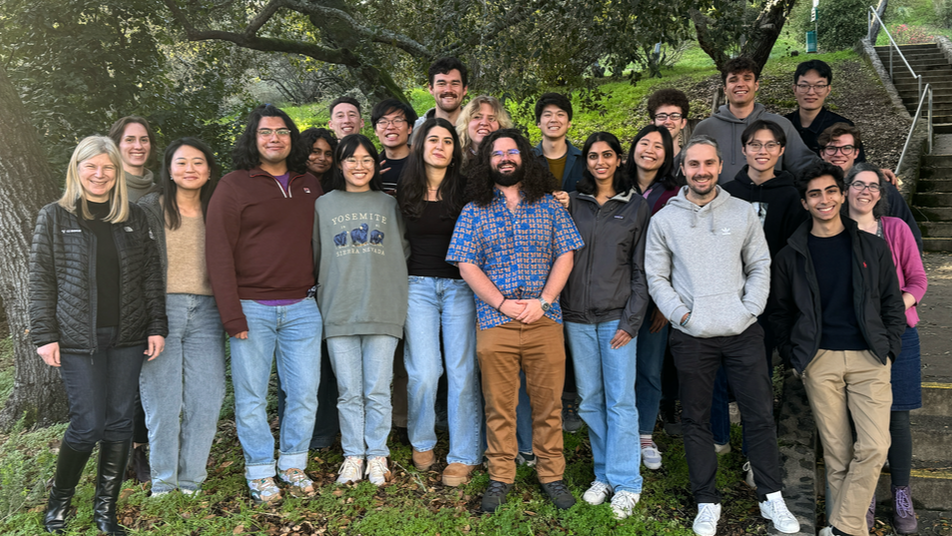

Engineered biological systems, ranging from molecules with new functions to entire organisms, have tremendous practical importance; they can also fundamentally change how we ask questions about the biological principles of function and fitness. Our research aims to invent approaches to engineer new molecules that operate as predicted in biological contexts, and to utilize prediction and engineering to address fundamental questions on the relationship of molecular characteristics, cellular function and organismal fitness. To address the many current challenges in the field – from developing more predictive computational design methods to determining the requirements for function in cells – we combine concepts from computer science, physics, chemistry, mathematics, engineering and biology.
Selected Publications
- Guo, A. B., Akpinaroglu, D., Stephens, C. A., Grabe, M., Smith, C. A. et al. Deep learning–guided design of dynamic proteins. Science 388, eadr7094 (2025).
- Kortemme, T. De novo protein design—From new structures to programmable functions. Cell 187, 526–544 (2024).
- Mathy, C. J. P., Mishra, P., Flynn, J. M., Perica, T., Mavor, D. et al. A complete allosteric map of a GTPase switch in its native cellular network. Cell Syst. 14, 237–246.e7 (2023).
- Perica, T.*, Mathy, C. J. P.*, Xu, J., Jang, G. M., Zhang, Y. et al. Systems-level effects of allosteric perturbations to a model molecular switch. Nature 599, 152–157 (2021).
- Pan, X., Thompson, M. C., Zhang, Y., Liu, L., Fraser, J. S. et al. Expanding the space of protein geometries by computational design of de novo fold families. Science 369, 1132–1136 (2020).
- Glasgow, A. A.*, Huang, Y.-M.*, Mandell, D. J.*, Thompson, M., Ritterson, R. et al. Computational design of a modular protein sense-response system. Science 366, 1024–1028 (2019).
- Eames, M. & Kortemme, T. Cost-Benefit Tradeoffs in Engineered lac Operons. Science 336, 911–915 (2012).
* Co-first authors
Perspectives and Reviews
- Kortemme, T. De novo protein design—From new structures to programmable functions. Cell 187, 526–544 (2024).
- Mathy, C. J. P. & Kortemme, T. Emerging maps of allosteric regulation in cellular networks. Curr. Opin. Struct. Biol. 80, 102602 (2023).
- Alberstein, R. G.*, Guo, A. B.* & Kortemme, T. Design principles of protein switches. Curr. Opin. Struct. Biol. 72, 71–78 (2022).
- Pan, X. & Kortemme, T. Recent advances in de novo protein design: Principles, methods, and applications. J. Biol. Chem. 296, 100558 (2021).
* Co-first authors
Highlights from the Lab

Amy’s work on designing dynamic proteins:
An Artificial Protein that Moves Like Something Found in Nature - UCSF
Scientists design proteins that can change their shapes - C&EN
AI-Designed Protein Moves Mimics Natural Movement - Genetic Engineering and Biotechnology News
Designer protein switches conformations like a natural one - Chemistry World